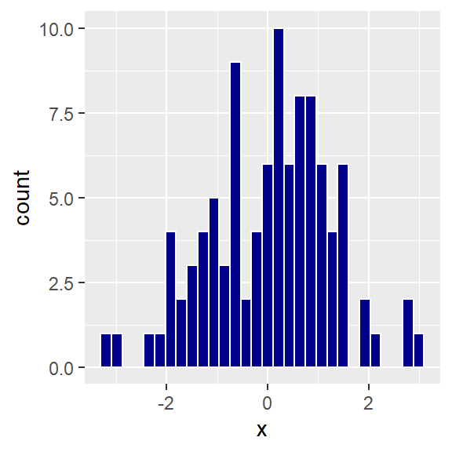

Project #1
Background
The Canadian National Women’s Rugby Team is intrested in the relationship between training load, performance and wellness in Rugby 7s. Rugby 7s is a fast-paced, physically demanding sport that pushes the limits of athlete speed, endurance and toughness. Rugby 7s players may play in up to three games in a day, resulting in a tremendous amount of athletic exertion. Substantial exertion results in fatigue, which may lead to physiological deficits (e.g., dehydration), reduced athletic performance, and greater risk of injury.
Despite the importance of managing training load in professional athletics, very little is known about its effects, and many training decisions are based on “gut feel.” Currently, training load is measured through a combination of subjective measurements (asking players how hard they worked) and objective measurements from wearable technology. Wellness is typically estimated by asking players how they feel in wellness surveys. However, there is no agreed-upon standard of defining wellness so the relationship between training load, performance and wellness is unclear.
Question
Quantify wellness into summary measures, and explore it’s relationship to performance, and training load.
Assignment
The assignment is to answer the question using the data, but you will almost surely need to develop more focused questions. You will have to wrangle into a format that can be analysed using statistical methods, and draw appropriate conclusions.
Groups
Students will be randomly divided into groups of two. Each group will hand in a written report and present to the class. Groups are available on Quercus.
Written Report
The written report is due on Dec. 10.
Answers to Some Common Questions about the Submitted Report
- It’s not necessary for R/Python code chunks to appear in the report (in R Markdown use the chunk options
echo=FALSE,warning = FALSE,message = FALSEand in Jupyter use the command line toolnbconvert1) unless there is some part of the code that will contribute to describing what you have done in the data analysis. Don’t submit a report with warning messages from a library you loaded in your report. For example,
Don’t do this:
The distribution of XX is shown below …
library(tidyverse)## Warning: package 'tidyverse' was built under R version 3.6.3## -- Attaching packages --------------------------------------- tidyverse 1.3.0 --## v ggplot2 3.3.2 v purrr 0.3.4
## v tibble 3.0.4 v dplyr 1.0.2
## v tidyr 1.1.2 v stringr 1.4.0
## v readr 1.4.0 v forcats 0.4.0## Warning: package 'ggplot2' was built under R version 3.6.3## Warning: package 'tibble' was built under R version 3.6.3## Warning: package 'tidyr' was built under R version 3.6.3## Warning: package 'readr' was built under R version 3.6.3## Warning: package 'purrr' was built under R version 3.6.3## Warning: package 'dplyr' was built under R version 3.6.3## Warning: package 'stringr' was built under R version 3.6.3## -- Conflicts ------------------------------------------ tidyverse_conflicts() --
## x dplyr::filter() masks stats::filter()
## x dplyr::lag() masks stats::lag()set.seed(1028)
data.frame(x = rnorm(100)) %>% ggplot(aes(x)) + geom_histogram(colour = "white", fill = "darkblue")## `stat_bin()` using `bins = 30`. Pick better value with `binwidth`.
Do this:
The distribution of XX is shown below …

Also, you will be submitting your R Markdown/Jupyter Notebook file so I can see all the gory details. This leads to …
What should be in the report? A high level description of what you have done. This leads to …
Who is the intended audience for the report and what do you mean by a “high level description”? The intended audience is an educated person that has taken at least one basic statistics course, but might be a bit rusty on the details. For example, your supervisor at work completed an MBA ten years ago and took a few statistics courses, but the details are a bit hazy.
How will my writing be evaluated?
Your writing will be evaluated for clarity and conciseness.
Title [1-5] There should be an appropriate title, adequate summary, and complete information including names and dates.
Introduction [1-5] The purpose of the research should be clearly stated and the scope of what is considered in the report should be clear.
Methods [1-5] The role of each method should be clearly stated. The description of the analyses should be clear and unambiguous so that another statistician or data scientist could easily re-construct it. The methods should be described accurately.
Results [1-5] There should be appropriate tables and graphs. The results should be clearly stated in the context of the problem. The size and direction of significant results should be given. The results must be accurately stated. The research question should be adequately answered.
Conclusion / Discussion [1-5] The results should be clearly and completely summarized. This section should also include discussion of limitations and/or concerns and/or suggestions for future consideration as appropriate.
General Considerations [1-5] The ideas should be presented in logical order, with well-organized sections, no grammatical, spelling, or punctuation errors, an appropriate level of technical detail, and be clear and easy to follow.
Class Presentation
Presentations will take place on Nov. 26. The time allotted for each group is 10 minutes plus 5 minutes for discussion.
General Presentation Guidelines
You will need to remind us about the project, but only tell us what we really need to know. We are curious about the results, and how your group presents the results, but they are not the only purpose of this presentation. So, what should you include? We’re interested in what you learned in the context of your project that has made you a better applied statistician/data scientist.
You may want to address some of the following:
- What made the project difficult/easy?
- What did you learn about data collection?
- What did you learn about statistical communication?
- What did you learn about statistical methods?
- What useful rules-of-thumb did you learn?
- What kind of creative thinking was needed to turn the data or research questions into something that you could analyze?
- From the beginning of the course until now, what has changed in how you view statistical work?
How your presentations will be evaluated?
Content [60%]
- Is there evidence that you have thought deeply and insightfully about your project and what you have learned from it?
- Did you use appropriate statistical methods to answer the questions?
- Is the content interesting and relevant?
Clarity [30%]
- Could the points of your presentation be easily understood by your classmates?
- Are you organized?
- By listening to your presentation, have your classmates had the opportunity to also learn what you learned?
Delivery [10%]
- Was everything that you said easy to hear?
- Was your presentation style engaging?
Data
The datasets provide a number of observations that we believe will be useful to measure wellness, training load, and fatigue in players of the Canadian National Women’s Rugby Team in the 2017-2018 season.
This data was used in ASA DataFest@UofT in May 2019. A video introducing a related challenge is available below.
Overview
The data were collected during the 2017-2018 season. There are five files that give different aspects of the games. The data themselves were collected through a variety of means.
Player level data are provided by the individual athletes themselves and by IMU/GPS devices worn on their vests during games. GPS data may not be available if players are out of range of the satellites. Players are uniquely identified by the PLayerID variable in all data files. Note that players numbered 18-21 did not play in any of the games in this dataset, and so they can be removed from the analysis.
Data are available on each game played during the season. Games are often organized in tournaments, which consist of up to 6 games. Each game consists of two 7-minute halves (except the final game of a tournament (game 6), which consists of two 10-minute halves). Games can have extra time at the referee’s discretion, if play is stopped for some reason during the game. There can be up to three games played on a single day. The order and time of the games is provided.
There were a total of 43 games, and they are identified by the GameID, which indicates the order in which the games were played throughout the season. (GameID=1 is the first game played in the season.)
Data Files
A codebook for the four data files below is available here
Games.csv
This data contains information on when, where, opponent, and high-level outcomes and events in the game (“box scores”).
How were the data collected?
- Information is available here
Possible links
- GameID links to gps.
- Date links to: wellness, GPS, Rate of Perceived Effort (RPE)
Wellness.csv
Wellness.csv Self-reported health and wellness for each player. This data provides subjective sense of energy levels. Urine Specific Gravity (USG) can provide evidence of dehydration.
How were the data collected?
- Self-reported by each athlete.
- In principle, reported every morning before 8:30am.
- All values are subjective, but Urine Specific Gravity (USG) is recorded through a sensor.
- Each athlete may have a different sense of what “typical” means for them, so consider standardizing per athlete.
Possible links
Date links to games, wellness, RPE, GPS. PlayerID links to RPE, GPS.
RPE.csv
Rate of Perceived Effort (RPE). Self-reported workloads for each “session”. A session can be a workout (focusing on a particular objective) or a game. Note that what one player rates “4” for RPE another might rate “7” or any other number, so consider standardizing per player. For many sports analysts, a ratio of acute/chronic training load > 1.2 indicates that the athlete is currently in “high” training load and at an increased risk for injury. A ratio < 0.8 indicates that they are “de-training” or recovering. These are cut-off values based on Australian Football League players.
How were the data collected?
In theory, each player rates herself after each session and/or game. It is easy, however, for players to neglect this when playing back-to-back games. Note that each day there can be multiple “sessions”, and that a “session” can be a recovery period, a game, strength & conditioning, etc.
There is no way to associate a particular rating with a particular game on days in which multiple games were played.
Possible links
Date links to wellness, games, GPS . PlayerID links to wellness and GPS,
gps.csv
Position data for each player during a game. Note that we do not know the location of the ball, or the orientation of the playing field. The “z” acceleration is in the up-down direction, x is back-front, y is side-to-side. Note that making plots of location is unlikely to help you understand the role of fatigue unless you first think carefully about aspects of location that might be affected by fatigue. Some large-scale things to consider: can you infer tackles? Coaches usually encourage players to keep space between them.
How were the data collected?
- Data were collected from sensors worn by players.
- Originally, the data were collected at 100 Hz (100 times per second), but have been collapsed to 10 Hz. Thus, each second, there are 10 “frames” that provide information on player location and acceleration.
Possible links
Date links to games, substitutions, wellness, RPE. PlayerID links to wellness, RPE. GameID links to games.